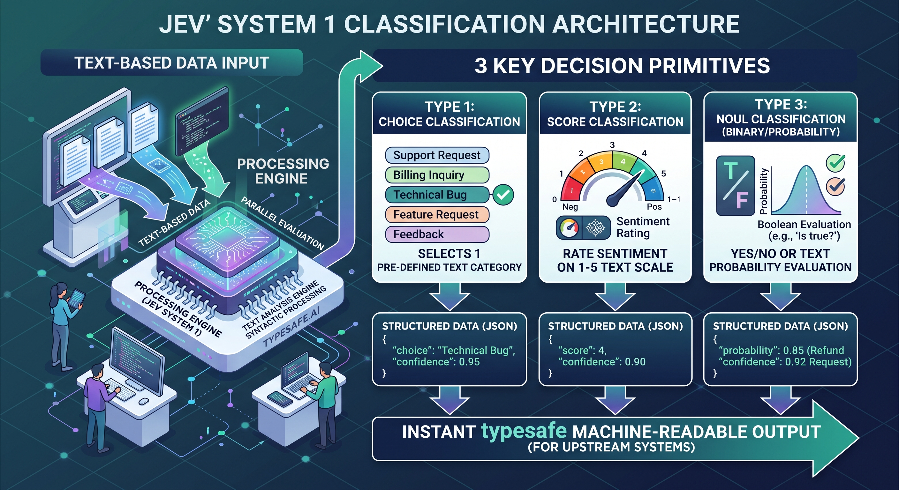

Intro
Some time ago I needed to steer an LLM in AI Harness to fix 3D models in code, or to start a 3D tool (takes ages) and edit it there.
So I was trying to create a YESMOM API with just a YES / NO logit, in AnyJev style.
Decision API
Selectia is a family of System One-style models fine-tuned from LFM 2.5, designed for one-pass typed decisions with calibrated probabilities. The Decision API (Choice, Noul, Score) is powered by open LLMs. For repo see: github.com AISidesKicks selectia.
Liquid AI LFM 2.5 models
They have a hybrid architecture and they are trained on a very large number of tokens in comparison with their weight.
Minus - OSS license with a commercial cap.
So can we use LFM models to create our own Jev-like models?
Our Qwen models are distilled models. LiquidAI LFM models are built for embedded edge use cases, so they can take advantage of wider knowledge.
They are small enough so we can retrain them on 4070 / 4090 hardware, so a reasonably equipped PC gamer can experiment with them.
For repo see: github.com AISidesKicks selectia.
What is Jev

It's not a Decision per se model, it helps you make one (it's like IF but still not 100% predictable) - because it's still too random, so you must decide based on 3 classification types.
Jev is still a model, it's still just an AI model!
See also: How to use the Jev AI model (Hugging Face).
Jev architecture (no official paper yet)
What alternatives we have
From the ML world: BERT-like systems like Layla. From the LLM world: decider.
Benchmarks / JevBench
Jev-like systems with LLMs
- Mapika/decider (I choose this one)
- Kev (LoRA): Kev, open-source Jev clone on the Qwen3.5 family
More to map here (TBD).
Diffusions, Gemma style
Futures
Visual Jev: arxiv.org/html/2609.25845v1.